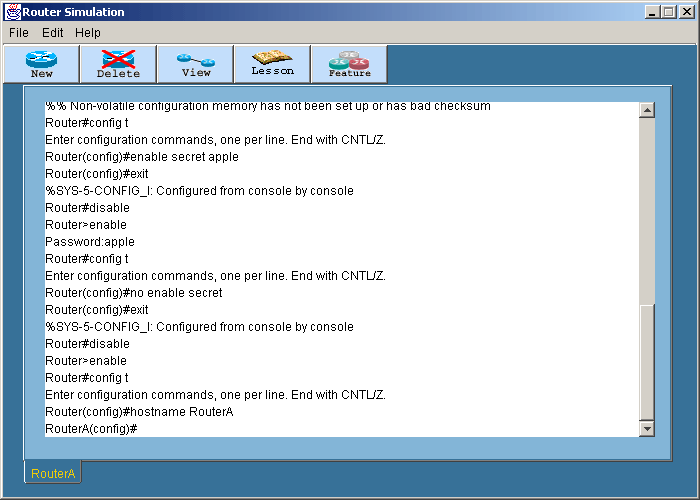
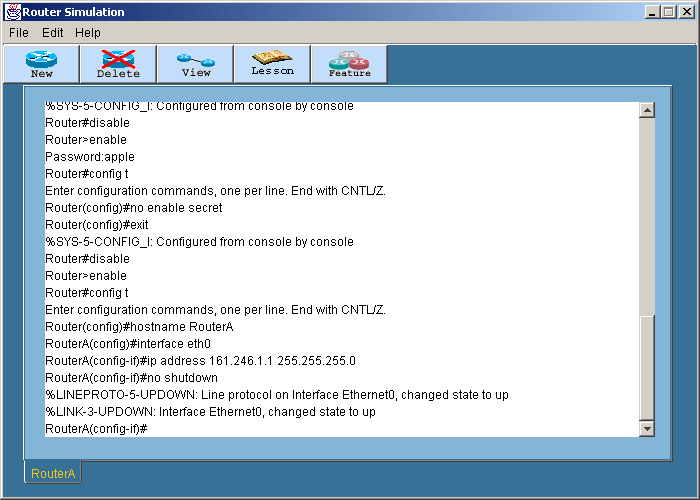
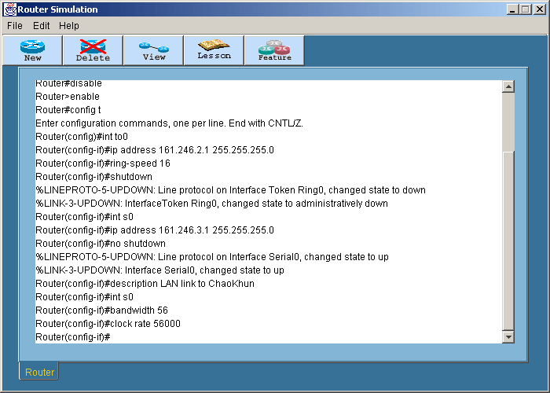

Setting your Hostname, Ip Address, Identification, Bandwidth and Clock
Rate
การทดลองนี้เป็นการ
- ล็อกอินเข้าเราเตอร์ที่ต้องการ หลังจากนั้นเข้าสู่ Privilege โหมดโดยพิมพ์คำสั่ง
En หรือ Enable
แล้วกด Enter
- เปลี่ยนเข้าสู่โหมด Global Configuration ด้วยคำสั่ง Config
t
- กำหนดชื่อโฮสต์ของเราเตอร์โดยใช้คำสั่ง Hostname
<hostname name> ตัวอย่างเช่น Hostname
RouterA

- สำหรับการกำหนดค่าไอพีแอดเดรสให้กับอินเทอร์เฟสต้องใช้คำสั่งต่อไปนี้
Interface Eth0
Ip Address 161.246.1.1 255.255.255.0
No Shutdown หรือ Shutdown

สำหรับอินเทอร์เฟสที่เป็นโทเคนริงสามารถกำหนดค่า Ring Speed ได้ โดยใช้คำสั่งดังนี้
Interface To0
Ip Address 161.246.2.1 255.255.255.0
ring-speed 16
No Shutdown หรือ Shutdown
สำหรับการกำหนดข้อมูลที่เป็นรายละเอียดให้กับอินเทอร์เฟสสามารถกำหนดด้วยคำสั่งดังนี้
Interface Serial0
Ip Address 161.246.3.1 255.255.255.0
No Shutdown หรือ Shutdown
Description Lan link to ChaoKhun
และสามารถกำหนดค่า Bandwidth และ Clock Rate ได้ดังนี้
Interface Serial0
Bandwidth 56
Clock Rate 56000

ค่า Bandwidth จะมีหน่วยเป็นกิโลบิต แต่ค่า Clock Rate จะมีหน่วยเป็นบิต
สำหรับโหมดการทำงานทั้งหมดของเราเตอร์สามารถดูได้ในสรุปคำสั่งทั้งหมด
|
 Lesson 5
Lesson 5